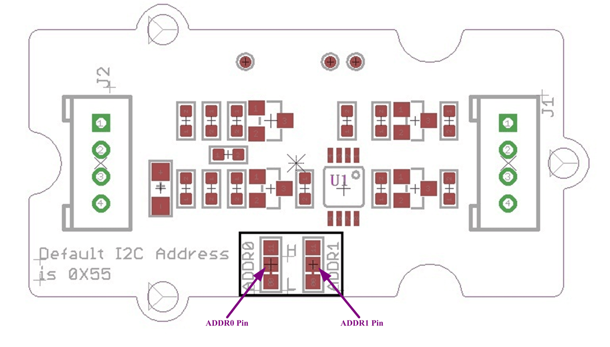
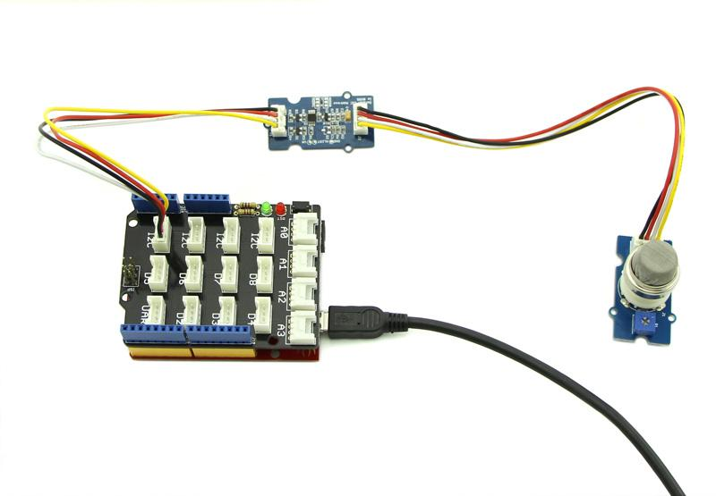
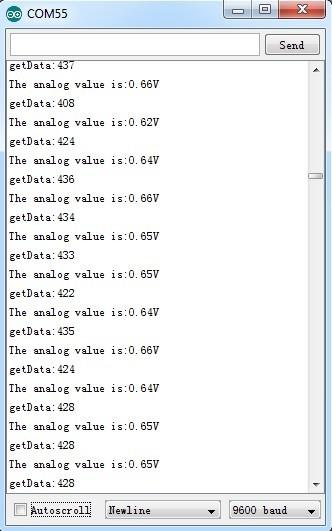
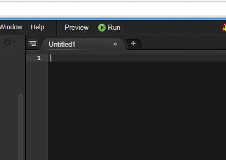
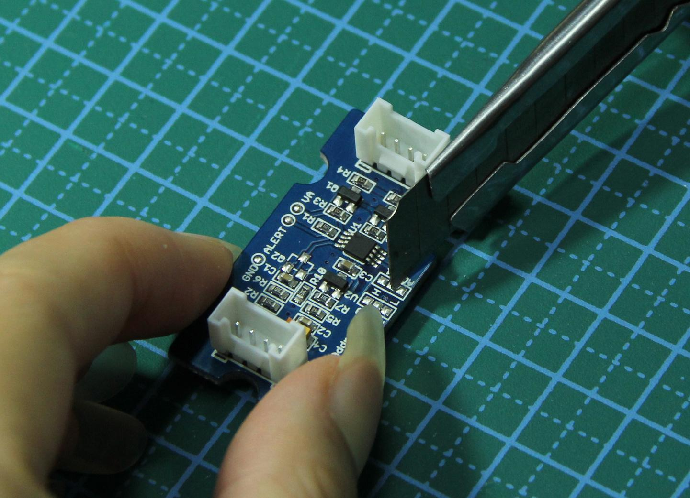
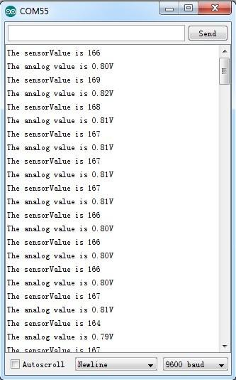
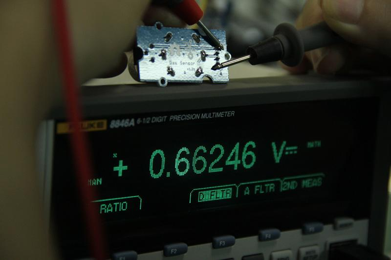

Grove - I2C ADC is a 12-bit precision ADC module based on ADC121C021. It helps you increase the accuracy of value collected from analog sensor by providing a constant reference voltage. Because its address is changeable, you can use up to 9 I2C ADC at the same time at most. At the other hand, this module provides auto sleep function which lowers the power consumption considerably.

| Item | Typical | Unit |
|---|---|---|
| Working Voltage | 5.0 | VDC |
| Resolution | 12 | Bit |
| Sample Rate | 188.9 | ksps |
| Dimension | 40X20 | mm |

J1: used to connect Arduino IIC Interface as Grove - I2C ADC output interface.
J2: used to connect analog sensor as Grove - I2C ADC input interface.
U1: ADC121C021 IC,12-Bit Analog-to-Digital Converter
The black line area is used to set the IIC address. ADDR0 and ADDR1 are shipped connected to L. You can change them to "H" or floating by a little modification on the board(floating is neither connecting "H" nor connecting "L"). Find details in the Reference.
Grove - I2C ADC has two interfaces: input socket(J2) and output socket(J1). Connect an analog sensor to its input socket and connect the I2C ADC to Arduino/Seeeduino also via Grove cables.
Take Grove - Gas Sensor as an example, and now we learn how to read sensor data using Grove - I2C ADC.
The hardware installation should be like this:

Now you can read the gas sensor value using the code below.
#include <Wire.h> #define ADDR_ADC121 0x55 #define V_REF 3.00 #define REG_ADDR_RESULT 0x00 #define REG_ADDR_ALERT 0x01 #define REG_ADDR_CONFIG 0x02 #define REG_ADDR_LIMITL 0x03 #define REG_ADDR_LIMITH 0x04 #define REG_ADDR_HYST 0x05 #define REG_ADDR_CONVL 0x06 #define REG_ADDR_CONVH 0x07 unsigned int getData; float analogVal=0; // convert void init_adc() { Wire.beginTransmission(ADDR_ADC121); // transmit to device Wire.write(REG_ADDR_CONFIG); // Configuration Register Wire.write(0x20); Wire.endTransmission(); } void read_adc() //unsigned int *data { Wire.beginTransmission(ADDR_ADC121); // transmit to device Wire.write(REG_ADDR_RESULT); // get result Wire.endTransmission(); Wire.requestFrom(ADDR_ADC121, 2); // request 2byte from device delay(1); if(Wire.available()<=2) { getData = (Wire.read()&0x0f)<<8; getData |= Wire.read(); } Serial.print("getData:"); Serial.println(getData); delay(5); Serial.print("The analog value is:"); Serial.print(getData*V_REF*2/4096); Serial.println("V"); } void setup() { Serial.begin(9600); Wire.begin(); init_adc(); } void loop() { read_adc();//adcRead); delay(50); }
In the code above, we defined the Vref as 3.0V which is decided by the I2C ADC module. This reference voltage is more accurate than one generated by microcontroller. And you can make that more accurate by measuring the voltage between VA and GND and use that value to replace 3.00 in the code above.
Now you can upload the code. Please click here if you do not know how to upload.
Afterwards, open the serial monitor and read the values:

Note: The address of Grove - I2C ADC is changeable which means you can redefine its address. That requires some hardware modification on the board. If you are thinking about using more than one I2C ADC at the same time, follow the instruction in the Reference part below to do so. The maximum of I2C ADC used simultaneously is 9, but there are only 4 I2C sockets on Grove - Base Shield V1.3, so if you want to use more than 4 I2C ADC, take a Grove - I2C Hub to create more I2C sockets.
To begin editing programs that live on BBG, you can use the Cloud9 IDE.
As a simple exercise to become familiar with Cloud9 IDE, creating a simple application to blink one of the 4 user programmable LEDs on the BeagleBone is a good start.
If this is your first time to use Cloud9 IDE, please follow this link.
Step1: Set the Grove - UART socket as a Grove - GPIO Socket, just follow this link.
Step2: Click the "+" in the top-right to create a new file.


Step3: Copy and paste the following code into the new tab
from Adafruit_I2C import Adafruit_I2C import time ADDR_ADC121 = 0x50 REG_ADDR_RESULT = 0x00 REG_ADDR_ALERT = 0x01 REG_ADDR_CONFIG = 0x02 REG_ADDR_LIMITL = 0x03 REG_ADDR_LIMITH = 0x04 REG_ADDR_HYST = 0x05 REG_ADDR_CONVL = 0x06 REG_ADDR_CONVH = 0x07 i2c = Adafruit_I2C(ADDR_ADC121) class I2cAdc: def __init__(self): i2c.write8(REG_ADDR_CONFIG, 0x20) def read_adc(self): "Read ADC data 0-4095." data_list = i2c.readList(REG_ADDR_RESULT, 2) #print 'data list', data_list data = ((data_list[0] & 0x0f) << 8 | data_list[1]) & 0xfff return data if __name__ == '__main__': # Connect the Grove - I2C ADC to I2C Grove port of Beaglebone Green. adc = I2cAdc() while True: print 'sensor value ', adc.read_adc() time.sleep(.2)
Step4: Save the file by clicking the disk icon and giving the file a name with the .py extension.
Step5: Connect Grove I2C ADC to Grove I2C socket on BBG.
Step6: Run the code. You'll find that the terminal outputs AD value every 2 seconds.
The ADC I2C has a seven-bit hardware address which is decided by ADR0 and ADR1. ADR0 and ADR1 are connected to L inside the board as default. But you can change it. For example, use a knife to cut off the connection between L and ADR0(as the picture shown below), then you make the state of ADR0 into Floating(connected to nothing). And if you solder up ADR0 and H this time, then you make the value of ADR0 H.

You can find the relationship of hardware I2C address and the values of ADR0 and ADR1 in the following table.
| Slave Address[A6 - A0] | ADR0 and ADR1 inputs state | |
|---|---|---|
| ADR1 | ADR0 | |
| 1010000(0x50) | Floating | Floating |
| 1010001(0x51) | Floating | L |
| 1010010(0x52) | Floating | H |
| 1010100(0x54) | L | Floating |
| 1010101(default 0x55) | L | L |
| 1010110(0x56) | L | H |
| 1011000(0x58) | H | Floating |
| 1011001(0x59) | H | L |
| 1011010(0x5A) | H | H |
Here is an experiment we make to give you a sense about how much the I2C ADC increase the accuracy of an analog sensor.
First, let's check the values collected directly through analog port on Arduino/Seeeduino from an Grove - Gas Sensor(MQ5)

We upload the code below to get the data.
/*
* Grove - Gas Sensor(MQ5)
*
* The Gas Sensor detect the related Gas density,
* Arduino get the result by analogread. the gas Density is
* 0~1, larger the output is, the denser the gas.
* Connect the Sensor to A0 in this demo;
*
* By: http://www.seeedstudio.com
*/
#define Vref 4.95
void setup() {
Serial.begin(9600);
}
void loop() {
float vol;
int sensorValue = analogRead(A0);
vol=(float)sensorValue/1023*Vref;
Serial.print("The sensorValue is ");
Serial.println(sensorValue);
Serial.print("The analog value is ");
Serial.print(vol);
Serial.println("V");
delay(100);
}
The result is:

As default, Vref is generated by Arduino which is theoretically 5V. But actually that is a value afloat which results the deviation of the final data. This kind of inaccuracy is avoided when using Grove - I2C ADC, because it provides a strict 3.0V as Vref.
To contrast, in the same condition, sensor values collected by the circuit with Grove - I2C ADC in the scope is shown below:
In order to find out which result is more close to the actual condition, here we use a multimeter to measure the voltage between the pin SIG and pin GND of the sensor.

Copyright (c) 2008-2016 Seeed Development Limited (www.seeedstudio.com / www.seeed.cc)